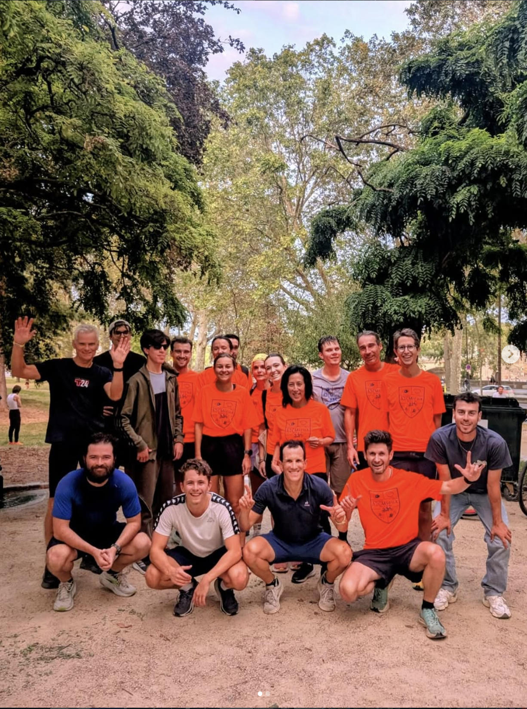

Cyclisme
Vélo en tandem
Sur un tandem, le guide pilote à l'avant et le·la sportif·ve déficient·e visuel·le pédale à l'arrière. Sorties conviviales et entraînements, de la balade à la performance.
Accueil › Les sports
A2CMieux organise plusieurs activités sportives pour les personnes déficientes visuelles et leurs guides. Découvrez-les ci-dessous.
Sur un tandem, le guide pilote à l'avant et le·la sportif·ve déficient·e visuel·le pédale à l'arrière. Sorties conviviales et entraînements, de la balade à la performance.

Sur nos créneaux piscine, encadrés par des maîtres-nageurs, débutants et confirmés progressent en sécurité, chacun à son rythme.

Reliés par un cordon de guidage, coureur et guide avancent ensemble. Du footing loisir aux courses officielles, à votre allure.

Enchaîner natation, vélo et course (ou course et vélo pour le duathlon) : nos coachs préparent les duos aux épreuves multisports.
Un autre sport vous tente ? Parlons-en ! Nous formons des duos selon les envies de nos membres.
Proposer une activitéQue vous soyez déficient·e visuel·le, guide bénévole ou simplement motivé·e, il y a une place pour vous chez A2CMieux. Le sport, ça se vit mieux à deux !